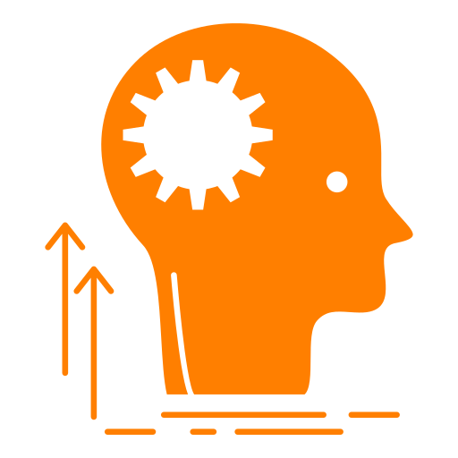

Witam na mojej stronie
Imię: Emilia
Nazwisko: Florek
Wiek: 21 lat
Profil: Zarządzanie projektami
Nr tel. 502-001-456
E-mail: emilia@gmail.com
Zarządzanie projektami to moja pasja.
Jestem studentką Zarządzania Projektami. W trakcie swoich studiów zdobywam wiedzę z zakresu planowania, przeprowadzania i kontrolowania realizacji złożonych przedsięwzięć wewnątrz firmy jak i dla jej Klientów, zdobywam umiejętności posługiwania się specjalistycznym oprogramowaniem przeznaczonym do zarządzania projektem, jak zarządzać projektami informatycznymi, unijnymi, inwestycyjnymi, zarządzania, ekonomii, finansów i rachunkowości.
Umiejętności
- Znajomość pakietu INSERT GT: Subiekt GT, Rachmistrz GT , Rewizor GT, Gratyfikant GT.
- znajomość pakietu MS Office: MS Excel, MS Word, MS Powerpoint, MS Access.
- znajomość programu Microsoft Project wspomagającego zarządzanie projektami, zasobami, czasem i finansami projektu,
- znajomość programu Microsoft Visio do tworzenia schematów i diagramów,
- znajomość programu R Commander do obliczeń statystycznych,
- język angielski - poziom B1.
- prawo jazdy - kategoria B,
- znajomość na poziomie średniozaawansowanym programów do wizualizacji danych: Tableau Public i MicroStrategy,
- podstawowe umiejętności z zakresu tworzenia stron internetowych - HTML, CSS,
- elastyczność, samodzielność, odporność na stres,
- zdobycie wiedzy z zakresu metodyki PRINCE2 Foundation, która została potwierdzona certyfikatem,
- dobra znajomość zasad rachunkowości oraz znajomość zagadnień kadrowo płacowych.
Zainteresowania
W czasie wolnym, najbardziej lubię poświęcać się rysowaniu. Interesują mnie różne formy sztuki plastycznej. Najczęściej jest to szkic, malarstwo, rysunek kredkami, kaligrafia, szkice perspektywistyczne i portrety.
Sprawia mi to dużą satysfakcję i rozwój osobisty. Przykłady mojej twórczości zamieszczone są poniżej.
Interesuję się również historią.
W szczególności pogłębiam wiedzę z zakresu historii II Wojny światowej, okresu powojennego, rewolucji przemysłowej oraz starożytnego Rzymu.
Poza tym często czytam książki, głównie beletrystykę, fantasy i powieści obyczajowe.

Doświadczenie
- praca w biurze rachunkowym - wykonywanie pomocniczych prac księgowych,
- wypełnianie obowiązków społecznych i obywatelskich poprzez bycie członkiem obwodowej komisji wyborczej,
- byłam aktywnym działaczem Polskiego Czerwonego Krzyża - współpraca w grupie wolontariuszy,
- praktyka zawodowa - wykonywanie wszystkich obowiązków księgowo-płacowych
(dekretacja, numeracja, księgowanie, wysyłka deklaracji, tworzenie sprawozdania do bilansu przedsiębiorstwa itp.),
- zdobyte doświadczenie w zakresie zarządzania projektami podczas zajęć na studiach,
- doświadczenia związanie z pracą w zespole podczas projektów realizowanych na studiach, wcielanie się w różne role projektowe,
Oczekiwania jak ma wyglądać praca w zespole wirtualnym
Uważam, że praca w zespole wirtualnym powinna być dobrze zorganizowana, a role w zespole powinny być dobrze określone i dopasowane, aby nie powstały nieporozumienia między członkami zespołu.
Ponadto ważne jest, aby osoby o różnych predyspozycjach i cechcach osobowości brały udział w projekcie, wytwarzając dzięki temu bardziej efektywne wyniki.
Istotne też są okresowe spotkania członków projektu, w celu podsumowania efektów swojej pracy i możliwości wprowadzenia ewentualnych poprawek.
Dzięki spotkaniom online zespół wirtualny jest też w stanie lepiej się ze sobą zapoznać, jeśli są to osoby z różnych stron świata. Ważne jest, aby w zespole panowała przyjazna atmosfera.